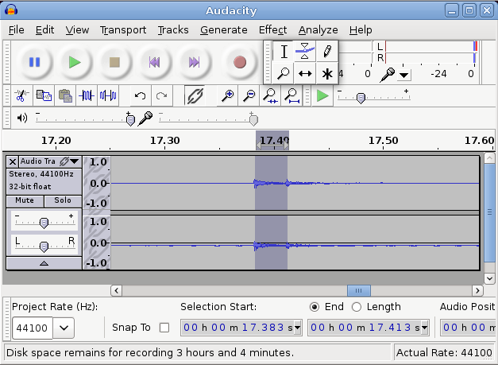

This chapter looks at some basic concepts of audio, both analogue and digital.
Audio is an analogue phenomenon. Sounds are produced in all sorts of ways, through voice, instruments and natural events such as trees falling in forests (whether or not there is anyone to hear). Sounds received at a point can be plotted as amplitude against time and can assume almost any functional state, including discontuous.
The analysis of sound is frequently done by looking at its spectrum. Mathematically this is achieved by taking the Fourier transform, but the ear performs almost a similar transform just by the structure of the ear. "Pure" sounds heard by the ear correspond to simple sine waves, and harmonics correspond to sine waves which have a frequency a multiple of the base sine wave.
Analogue signals within a system such as an analogue audio amplifier are designed to work with these spectral signals. They try to produce an equal amplification across the audible spectrum.
Computers, and an increasingly large number of electronic devices, work on digital signals, comprised of bits of ones and zeroes. Bits are combined into bytes with 256 possible values, or 16 bit words with 65536 possible values, or even larger combinations such as 32 or 64 bit words.
Digitising an analogue signal means taking samples from that signal at regular intervals, and representing those samples on a discrete scale. The frequency of taking samples is the sample rate. For example, audio on a CD is sampled at 44,100hz, that is, 44,100 times each second. On a DVD, samples may be taken upto 192,000 times per second, with a sampling rate of 192kHz. Conversely, the standard telephone sampling rate is 8kHz.
This figure from
Wikipedia: Pulse-code modulation
illustrates sampling:
The sampling rate affects two major factors. Firstly, the higher the sampling rate, the larger the size of the data. All other things being equal, doubling the sample rate will double the data requirements. On the other hand the Nyquist-Shannon theorem places limits on the accuracy of sampling continous data: an analogue signal can only be reconstructed from a digital signal (i.e. be distortion-free) if the highest frequency in the signal is less than one-half the sampling rate.
This is often where the arguments about the "quality" of vinyl versus CDs end up, as in Vinyl vs. CD myths refuse to die . With a sampling rate of 44.1kHz, frequencies in the original signal above 22.05kHz may not be reproduced accurately when converted back to analogue for a loudspeaker or headphones. Since the typical hearing range for humans is only upto 20,000hz (and mine is now down to about 10,000hz) then this should not be a significant problem. But some audiophiles claim to have amazingly sensitive ears...
The sample format is the other major feature of digitizing audio: the number of bits used to discretize the sample. For example, telephone signals use 8kHz sampling rate and 8-bit resolution (see How Telephones Work ) so that a telephone signal can only convey 2^8 i.e. 256 levels.
Most CDs and computer systems use 16-bit formats. (see Audacity - Digital Sampling ) giving a very fine gradation of the signal and allowing a range of 96dB.
A frame holds all of the samples from one time instant. For a stereo device, each frame holds two samples, while for a five-speaker device, each frame would hold five samples.
Pulse-code modulation (PCM) is the standard form of representing a digitized analogue signal. From Wikipedia
Pulse-code modulation (PCM) is a method used to digitally represent sampled analog signals. It is the standard form for digital audio in computers and various Blu-ray, DVD and Compact Disc formats, as well as other uses such as digital telephone systems. A PCM stream is a digital representation of an analog signal, in which the magnitude of the analog signal is sampled regularly at uniform intervals, with each sample being quantized to the nearest value within a range of digital steps.
PCM streams have two basic properties that determine their fidelity to the original analog signal: the sampling rate, which is the number of times per second that samples are taken; and the bit depth, which determines the number of possible digital values that each sample can take.
However, even though this is the "standard", there are variations . The principal one concerns the representation as bytes in a word-based system: little-endian or big-endian . The next variation is signed versus unsigned .
There are a number of other variations which are less important, such as whether the digitisation is linear or logarithmic. See the Multi-media Wikipedia for discussion of these.
From Introduction to Sound Programming with ALSA
When a sound device is active, data is transferred continuously between the hardware and application buffers. In the case of data capture (recording), if the application does not read the data in the buffer rapidly enough, the circular buffer is overwritten with new data. The resulting data loss is known as overrun. During playback, if the application does not pass data into the buffer quickly enough, it becomes starved for data, resulting in an error called underrun.
Latency is the amount of time that elapses from when a signal enters a system to when it (or its equivalent such as an amplified version) leaves the system.
From Ian Waugh's Fixing Audio Latency Part 1:
Latency is a delay. It's most evident and problematic in computer-based music audio systems where it manifests as the delay between triggering a signal and hearing it. For example, pressing a key on your MIDI keyboard and hearing the sound play through your sound card.
It's like a delayed reaction and if the delay is very large it becomes impossible to play anything in time because the sound you hear is always a little bit behind what you're playing which is very distracting.
This delay does not have to be very large before it causes problems. Many people can work with a latency of about 40ms even though the delay is noticeable, although if you are playing pyrotechnic music lines it may be too long.
The ideal latency is 0 but many people would be hard pushed to notice delays of less than 8-10ms and many people can work quite happily with a 20ms latency.
A Google search for "measuring audio latency" will turn up many sites.
I use a crude - but simple - test. I installed Audacity on a separate PC,
and used it to record simultaneously a sound I made and that sound when
picked up and played back by the test PC. I banged a spoon against a bottle
to get a sharp percursive sound. When magnified, the recorded sound showed
two peaks and selecting the region between the peaks showed me the latency
in the selection start/end. In the figure below, these are
17.383 and 17.413 seconds, with a latency of 30 msecs.

Sampling an analogue signal will be done at regular intervals. Ideally, playback should use exactly those same intervals. But, particularly in networked systems, the periods may not be regular. Any irregularity is known as jitter . I don't have a simple way of testing for jitter - I'm still stuck on latency as my major problem!
Mixing means taking inputs from one or more sources, possibly doing some processing on these input signals and sending them to one or more outputs. The origin, of course, is in physical mixers which would act on analogue signals. In the digital world the same functions would be performed on digital signals.
A simple document describing analogues mixers is The Soundcraft Guide to Mixing . This covers the functions of
This short chapter has introduced some of the basic concepts that will occupy much of the rest of this book. The Scientist and Engineer's Guide to Digital Signal Processing by Steven W Smith has wealth of further detail,